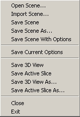

You may have scenes that you have saved using Save Scene,
Save Scene As, or Save Scene with Options.
You can open or import a scene. When you open a scene, the current scene closes and the new one opens. When you import a scene, the current scene remains and the new one is added.
To open a scene:

.xml file, double-click it, and wait for the volumes
and models to load. To import a scene:
.xml or .mrml), double-click it, and wait for the volumes and models to load.